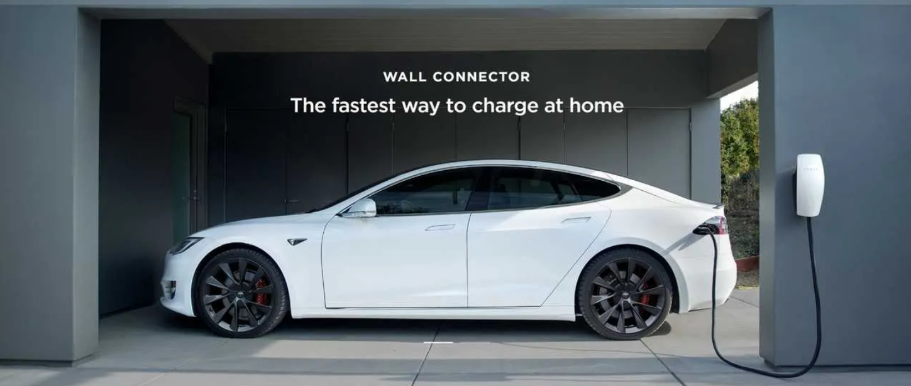

Tesla, Inc., formerly (2003–17) Tesla Motors, American manufacturer of electric automobiles, solar panels, and batteries for cars and home power storage. It was founded in 2003 by American entrepreneurs Martin Eberhard and Marc Tarpenning and was named after Serbian American inventor Nikola Tesla
Tesla model s
High Impact Protection
Model S is built from the ground up as an electric vehicle,
with a high-strength architecture and floor-mounted battery pack
for incredible occupant protection and low rollover risk
Every Model S includes Tesla’s latest active safety features,
such as Automatic Emergency Braking, at no extra cost.
Overview
Manufacturer Tesla, Inc.
Also called Code name: WhiteStar
Production 2012–present
Assembly
United States: Fremont, California (Tesla Factory)
Netherlands: Tilburg (all parts)
Designer Franz von Holzhausen
Body and chassis
Class Executive car (E)
Body style 5-door liftback
Layout
Rear-motor, rear-wheel drive
Dual-motor all-wheel drive (D models)
Related Tesla Model X
Powertrain
Electric motor Front and rear motor combined output up to 615 kW (825 bhp), 1,300 N⋅m (960 lb⋅ft), 3-phase AC induction motor
Transmission 1-speed fixed gear ratio (9.734:1 or 9.325:1); direct-drive[4][5]
Battery 100 kWh lithium ion
Discontinued: 60, 70, 75, 85 and 90 kWh lithium ion
Electric range
75 kWh (270 MJ)
249–259 mi (401–417 km) (EPA)
85 kWh (310 MJ)
253–272 mi (407–438 km) (EPA)
310 mi (500 km) (NEDC)
90 kWh (320 MJ)
270–294 mi (435–473 km) (EPA)
100 kWh (360 MJ)
348–402 mi (560–647 km) (EPA)
Plug-in charging
Onboard charger
3ϕ 400 V 16 A[6] (Type 2);[7] 1ϕ 85–300 V 48 A (new front fascia variant)
Optional charger: 20 kW from 1ϕ 277 V 72 A
Dual charger: 21.1 kW from 1ϕ 264 V 80 A and 22 kW from 3ϕ 400 V 32 A; 19.2 kW from 2ϕ 240 V 80 A[8] (old front fascia variant); 16.5 kW from 3ϕ 400 V 24 A (new front fascia variant)[6]
Offboard charger
Supercharger at 150–250 kW DC
Dimensions
Wheelbase 116.5 in (2,960 mm)
Length 195.9 in (4,980 mm)
Width
77.3 in (1,964 mm) (ex. mirrors)
86.2 in (2,189 mm) (inc. mirrors)
Height 56.5 in (1,440 mm)
Curb weight 4,323–4,960 lb (1,961–2,250 kg)[9][10][11]
"Model S" redirects here. For the fighter aircraft, see Curtiss Model S.
The Tesla Model S is an all-electric five-door liftback produced by Tesla, Inc. It was introduced on June 22, 2012.[12] It received a major refresh in June 2021. Tesla positions the Model S as its flagship.
In 2013, the Model S became the first electric car to top the monthly new-car-sales ranking in any country, leading twice in Norway, in September and December 2013[13][14][15][16] and in Denmark in December 2015.[17] Sales passed 250,000 units in September 2018.[18][19][20][21] The Model S was the top-selling plug-in electric car worldwide in 2015 and 2016, although it was later surpassed by the Model 3.[22][23][24]
In an early review of the Model S, Consumer Reports declared, "This car performs better than anything we've ever tested before. Let me repeat that: Not just the best electric car, but the best car. It does just about everything really, really well."[25] In their Owner Satisfaction survey owners have consistently rated Teslas at, or near, the top rankings.[26] In 2019, Motor Trend named the 2013 Tesla Model S the ultimate "Car of the Year" over the magazine's entire 70-year history.[27]
Overview
Manufacturer Tesla, Inc.
Also called Code name: WhiteStar
Production 2012–present
Assembly
United States: Fremont, California (Tesla Factory)
Netherlands: Tilburg (all parts)
Designer Franz von Holzhausen
Body and chassis
Class Executive car (E)
Body style 5-door liftback
Layout
Rear-motor, rear-wheel drive
Dual-motor all-wheel drive (D models)
Related Tesla Model X
Powertrain
Electric motor Front and rear motor combined output up to 615 kW (825 bhp), 1,300 N⋅m (960 lb⋅ft), 3-phase AC induction motor
Transmission 1-speed fixed gear ratio (9.734:1 or 9.325:1); direct-drive
Battery 100 kWh lithium ion
Discontinued: 60, 70, 75, 85 and 90 kWh lithium ion
Electric range
75 kWh (270 MJ)
249–259 mi (401–417 km) (EPA)
85 kWh (310 MJ)
253–272 mi (407–438 km) (EPA)
310 mi (500 km) (NEDC)
90 kWh (320 MJ)
270–294 mi (435–473 km) (EPA)
100 kWh (360 MJ)
348–402 mi (560–647 km) (EPA)
Plug-in charging
Onboard charger
3ϕ 400 V 16 A[6] (Type 2);[7] 1ϕ 85–300 V 48 A (new front fascia variant)
Optional charger: 20 kW from 1ϕ 277 V 72 A
Dual charger: 21.1 kW from 1ϕ 264 V 80 A and 22 kW from 3ϕ 400 V 32 A; 19.2 kW from 2ϕ 240 V 80 A[8] (old front fascia variant); 16.5 kW from 3ϕ 400 V 24 A (new front fascia variant)
Offboard charger
Supercharger at 150–250 kW DC
Dimensions
Wheelbase 116.5 in (2,960 mm)
Length 195.9 in (4,980 mm)
Width
77.3 in (1,964 mm) (ex. mirrors)
86.2 in (2,189 mm) (inc. mirrors)
Height 56.5 in (1,440 mm)
Curb weight 4,323–4,960 lb (1,961–2,250 kg)
Tesla model 3
The Model 3 is an electric fastback mid-size four-door sedan developed by Tesla.
The Model 3 Standard Range Plus version delivers an EPA-rated all-electric range of
262 miles (422 km) and the Long Range versions deliver 353 miles (568 km).
According to Tesla, the Model 3 carries full self-driving hardware,
with periodic software updates adding functionality.
Limited production of the Model 3 began in mid-2017,
with the first production vehicle rolling off the assembly line on July 7, 2017.
The official launch and delivery of the first 30 cars took place on July 28.
The Model 3 was marketed as being more affordable to more people than some other models by Tesla.
Since early 2020, the Model 3 is the world's best-selling electric car in history,
and, in June 2021, became the first electric car to pass the 1 million global sales milestone.
The Model 3 has been the world's top selling plug-in electric car (PEV) for three years running,
from 2018 to 2020. It has also been the best-selling PEV in the United States for three
consecutive years, 2018 to 2020, the top selling PEV in Europe in 2019,
and the best-selling PEV in China in 2020.
Overview
Manufacturer Tesla, Inc.
Production July 2017 – present
Assembly
United States: Fremont, California (Tesla Factory)
China: Shanghai (Gigafactory 3)
Designer Franz von Holzhausen[1]
Body and chassis
Class Compact executive car (D)
Body style 4-door fastback sedan
Layout
Rear-motor, rear-wheel drive
Dual-motor all-wheel drive
Related
Tesla Model Y
Tesla Model S
Powertrain
Electric motor Permanent magnet synchronous reluctance motor
Transmission 1-speed fixed gear 9:1 ratio
Battery 54, 62, 75 or 82 kWh (190, 220, 270 or 300 MJ) lithium ion Discontinued: 62 and 75 kWh lithium ion
Electric range
220 miles (354 km) Standard Range (not available for order online)
262 miles (422 km) Standard Range Plus
353 miles (568 km) Long Range AWD/Long Range Performance AWD
313 miles (504 km) Long Range Performance AWD with Performance Upgrade
Dimensions
Wheelbase 113.2 in (2,875 mm)
Length 184.8 in (4,694 mm)
Width 72.8 in (1,849 mm)
Height 56.8 in (1,443 mm)
Curb weight
Standard Range RWD: 3,552 lb (1,611 kg)
Standard Range plus RWD: 3,627 lb (1,645 kg)
Mid Range RWD: 3,686 lb (1,672 kg)
Long Range RWD: 3,814 lb (1,730 kg)
Long-Range Dual-Motor AWD (including Performance): 4,072 lb (1,847 kg)
Tesla model x
The Tesla Model X is a mid-size all-electric luxury crossover made by Tesla, Inc.
The vehicle is notable in that it uses falcon-wing doors for passenger access.
The Model X was developed from the full-sized sedan platform of the Tesla Model S.
The Model X has an EPA size class as an SUV, and shares ~30% of its content with the Model S,
half of the originally planned ~60%, and weighs about 10 percent more.
Both the Model X and Model S are being produced at the Tesla Factory in Fremont,
California. The prototype was unveiled at Tesla's design studios in Hawthorne, California on February 9,
2012.[11][12] First deliveries of the Model X began in September 2015.
After one full year on the market, in 2016, the Model X ranked seventh among the world's
best-selling plug-in cars.
As of April 12, 2021, the Model X is only available as the Long Range with an estimated EPA range
of 360.4 miles (580.0 km) and the Plaid model with an estimated EPA range of 339.9 miles (547.0 km).
Both come with Tesla's Autopilot driver assistance system.
Overview
Manufacturer Tesla, Inc.
Production 2015–present
Assembly
United States: Fremont, California (Tesla Factory)
Netherlands: Tilburg (all parts)
Designer Franz von Holzhausen
Body and chassis
Class Mid-size luxury crossover SUV
Body style 5-door SUV
Doors Conventional doors (front)
Falcon-wing doors (rear)
Related
Tesla Model S
Tesla Model Y
Powertrain
Electric motor Dual Motor AWD
60D, 70D, 75D
328 hp (245 kW) front and rear
90D, 100D
259 hp (193 kW) front and rear
P90D, P100D
259 hp (193 kW) front, 503 hp (375 kW) rear
Transmission Single-speed transaxle gearboxes
60D, 70D, 75D, 90D, 100D: 9.34:1 front, 9.34:1 rear
P90D, P100D: 9.34:1 front, 9.73:1 rear
Battery 100 kWh lithium ion
Discontinued: 60, 75 and 90 kWh lithium ion
Electric range 75D 75 kWh (270 MJ)
238 mi (383 km) (EPA)
90D 90 kWh (320 MJ)
257 mi (414 km) (EPA)
P90D 90 kWh (320 MJ)
250 mi (400 km) (EPA)
P100D 100 kWh (360 MJ)
305 mi (491 km)[8]
100D 100 kWh (360 MJ)
325 mi (523 km) (EPA)
Dimensions
Wheelbase 116.7 in (2,965 mm)
Length 198.3 in (5,036 mm)
Width 78.7 in (1,999 mm)
Height 66.3 in (1,684 mm)
Curb weight 60D 5,072 lb (2,300 kg)
70D 5,072 lb (2,300 kg)
75D 5,140 lb (2,330 kg)
90D 5,271 lb (2,390 kg)
P90D 5,381 lb (2,440 kg)
100D 5,421 lb (2,459 kg)
P100D 5,531 lb (2,509 kg)[
Tesla model y
The Tesla Model Y is an electric compact crossover utility vehicle (CUV) by Tesla, Inc.
Tesla unveiled it in March 2019,started production at its Fremont plant in January 2020,
and started deliveries on March 13, 2020.
It is the second vehicle based on the Model 3 sedan platform.
The Model Y shares an estimated 75% of its parts with the Tesla Model 3,
which includes a similar interior design and electric powertrain.
Model Y offers optional third-row seats for a seven-passenger seating capacity.
The Model Y fills a smaller and less expensive segment than the full-sized Tesla Model X.
There were four planned powertrain configurations for the Model Y: Standard Range Rear-Wheel Drive (RWD),
Long Range Rear-Wheel Drive, Long Range with Dual Motor All-Wheel Drive (AWD),
and Performance (with Dual Motor All-Wheel Drive). The Long Range AWD model and the Performance
model are currently being delivered. The Standard Range RWD configuration was initially canceled
in July 2020, due to the range (230 miles EPA) being unacceptably low to Musk,
but was orderable as of January 2021 (with 244 miles of EPA range).
By February 7, 2021, the Long Range RWD appears to have been cancelled.
Overview
Manufacturer Tesla, Inc.
Production 2020–present
Assembly
United States: Fremont, California (Tesla Factory)
China: Shanghai (Giga Shanghai)
Body and chassis
Class Compact luxury crossover SUV
Body style 5-door SUV
Layout Rear-motor, rear-wheel drive
Dual-motor all-wheel drive (AWD models)
Related
Tesla Model 3
Powertrain
Electric motor Permanent Magnet Synchronous Reluctance Motor
Battery 75 kWh lithium ion
Electric range
303 miles (488 km) Performance (EPA-rated)
326 miles (525 km) Long Range AWD (EPA-rated)
244 miles (393 km) Standard Range (EPA-rated)
Dimensions
Wheelbase 113.8 in (2,891 mm)
Length 187 in (4,750 mm)
Width 75.6 in (1,920 mm)
Height 63.9 in (1,623 mm)
Curb weight
Long Range AWD: 4,416 lb (2,003 kg) Performance AWD: 4,416 lb (2,003 kg) Standard Range RWD: 3,920 lb (1,780 kg)
Tesla Cybertruck
The Tesla Cybertruck is an all-electric, battery-powered, light-duty truck announced by Tesla, Inc.
Three models have been announced, with EPA range estimates of 400–800 kilometers (250–500 mi)
and an estimated 0–100 km/h (0–62 mph) time of 2.9–6.5 seconds, depending on the model.
The stated goal of Tesla in developing the Cybertruck is to provide a sustainable energy substitute for
the roughly 6,500 fossil-fuel-powered trucks sold per day in the United States.
The base price of the rear-wheel drive (RWD) model of the vehicle was announced to be US$39,900,
with all-wheel drive (AWD) models starting at US$49,900. Production of the dual-motor AWD and tri-motor
AWD Cybertruck production was slated to begin in late 2021, with the RWD model release date in late 2022,
but production was pushed back to 2022.
Overview
Manufacturer Tesla, Inc.
Also called Cybrtrk
Production 2022 (to commence)
Model years 2022
Designer
Franz von Holzhausen
Sahm Jafari
Ian Kettle
WooTak Kim
Julien Bilodeau
Body and chassis
Class
Light commercial vehicle/Multi-purpose vehicle (EU)
Large pickup (North America)
Body style 4-door polygonal pickup truck[5]
Layout
Rear motor, rear-wheel drive
Dual- or tri-motor, all-wheel drive
Platform
Tesla in-house
Chassis Unibody
Powertrain
Electric motor Internal Permanent Magnet - Synchronous Reluctance Motor (IPM-SynRM)
Dimensions
Wheelbase 149.9 in (3,807 mm)
Length 231.7 in (5,885 mm)
Width 79.8 in (2,027 mm)
Height 75 in (1,905 mm)